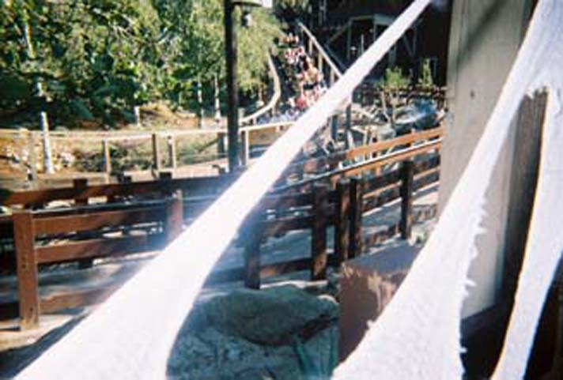
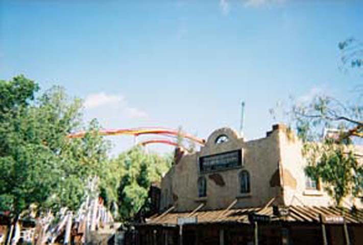
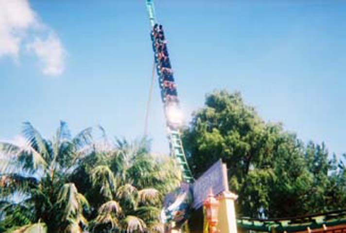
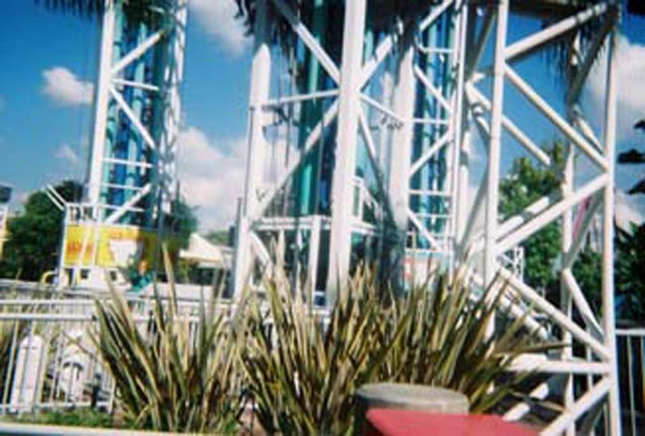
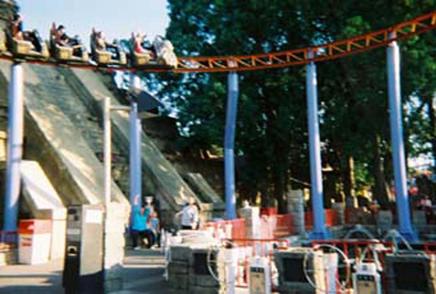

Knotts Berry Farm

Ghostrider is the best woodie I've ever been on!
Here I am preparing for a ride on Ghostrider.

Here's some construction of Knotts new B&M inverted coaster, Silver Bullet.
 Knotts Timberline Twister is one of the better kiddy coasters.
Knotts Timberline Twister is one of the better kiddy coasters.

Montezooma is a Schwarzkopf Shuttle Loop that opened in 1978! It is still fun today.
La Revolution is a Frissbee that runs a very low program, but is still fun.
Knotts has one of the newer style chairswings unlike Magic Mountain.

Supreme Screm is one of the worlds largest drop towers.
Celeste LOVES the Xcelerator Test Seat!
It sucks how you have to pay $5.00 to ride Screamin Swing.
Riptide is the new Top Spin at Knotts. They're not my favorite type of flat ride.
 Boomerang at Knotts is quite a rough ride.
Boomerang at Knotts is quite a rough ride.
Wipeout provides you with some KILLER Lateral Gs!!!

Celeste gets her Jaguar credit.
And when shes BEGGING to go on it again, It means she LOVED Jaguar!
Home